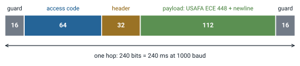
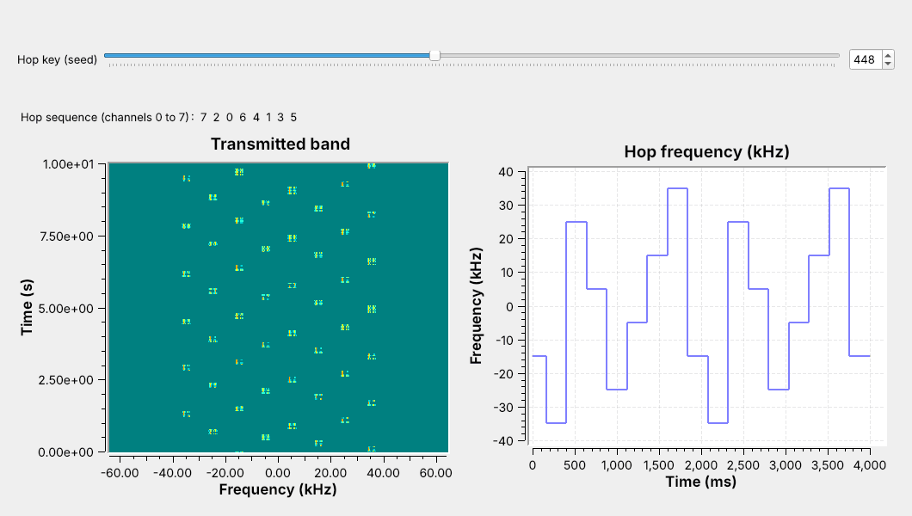
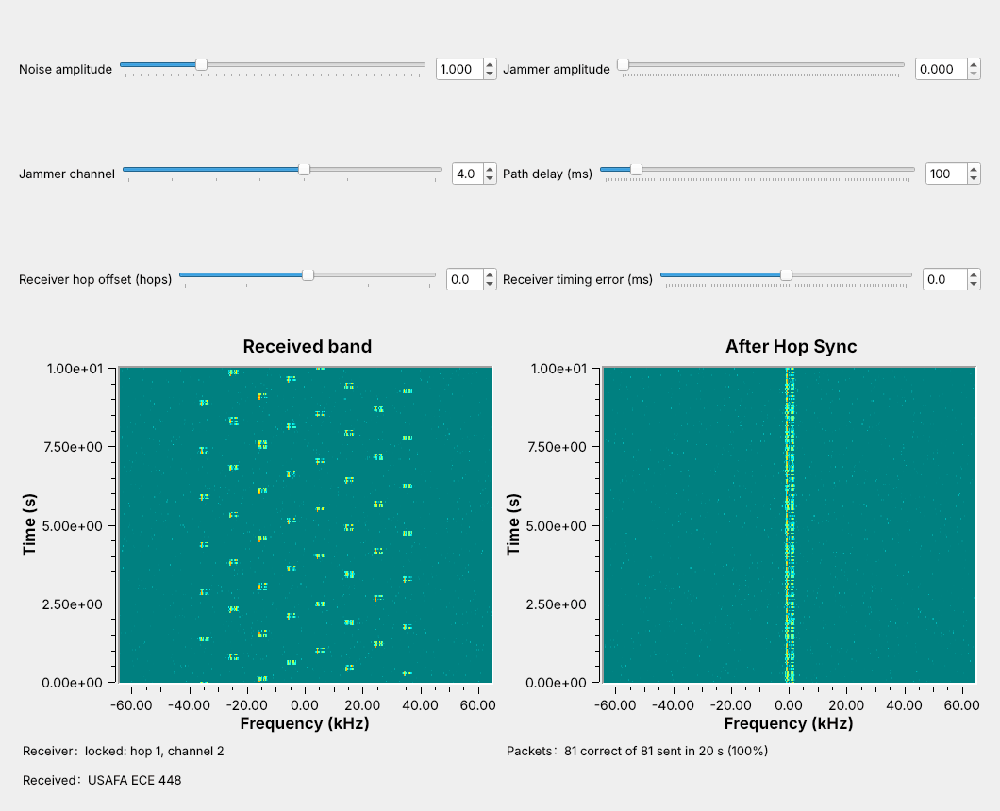
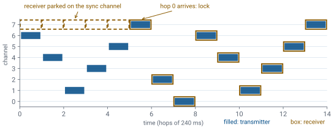
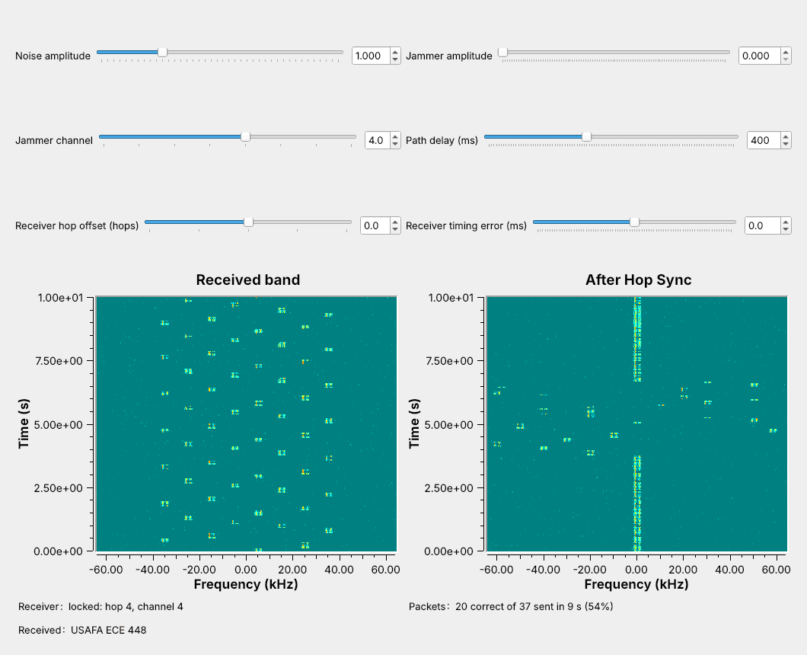
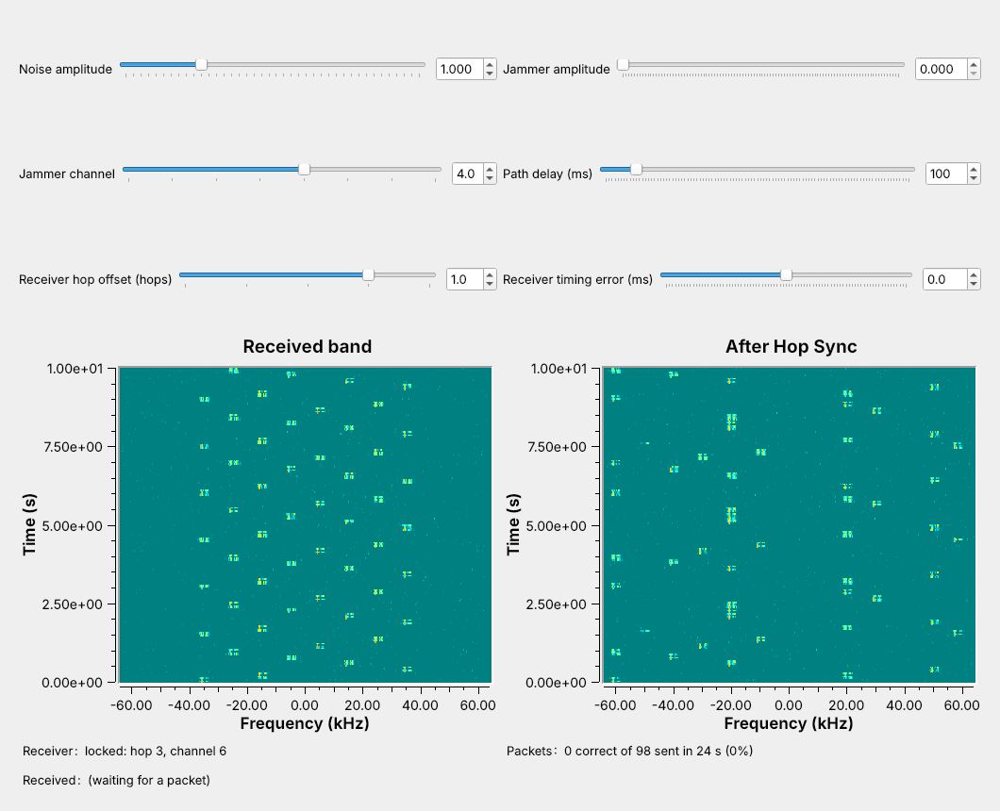

L16 - Frequency Hopping#
Frequency Hopping
An FHSS transmitter and receiver that stay on the same hop sequence.
Lesson 16 · Module 6: Waveform Applications & RF Reverse Engineering · Dr. Neil Rogers
Slides
Learning Objectives
- I can implement FHSS transmission and reception, including hop-sequence synchronization.
A Link That Hops

The transmitter changes channel every 240 ms, in an order only the receiver knows.
A jammer parked on one channel stops only one hop in eight.
Open L16-fhss-link.grc, run it, and set the Jammer amplitude slider to 3. The figure is that window. The transmitter is Lesson 8’s FSK modem sending Lesson 8’s packets, one packet per hop, on a new channel every hop. On the left waterfall, the band the receiver sees, the signal is a trail of short dashes stepping around eight channels, and the jammer, a strong tone parked on one channel, is the solid line at +5 kHz.
Now look at the right waterfall, the output of the receiver’s Hop Sync block. The signal stands still at 0 Hz, and the jammer is the one that hops. Watch the Packets label: about 88% of the packets arrive, because only the hops on the jammer’s channel, 1 in 8, are lost. This is frequency-hopping spread spectrum (FHSS).
Where Frequency Hopping Is Used
Bluetooth Classic hops among 79 channels, up to 1600 times a second.
SINCGARS, the Army’s VHF radio, hops among 2320 channels about 100 times a second.
ISM-band hoppers at 915 MHz use at least 50 channels.
Interference on one channel, from a microwave oven, a Wi-Fi network, or a jammer, takes from a hopping link only the hops that land there, and a listener without the sequence hears only short bursts scattered across the band.
Bluetooth Classic hops among 79 channels 1 MHz apart at 2.4 GHz, in 625 µs slots, and its adaptive frequency hopping (AFH) drops channels that stay busy. SINCGARS, the Army’s VHF-FM radio, hops among up to 2320 channels 25 kHz apart and takes its sequence from a security key and the time of day. Unlicensed hoppers at 915 MHz follow FCC Part 15.247: a pseudo-random sequence that uses every channel equally, at least 50 channels for a narrowband signal, and an average of no more than 0.4 s on any one channel within a 20 s period.
Part 1: The Hopping Transmitter

The top row is Lesson 8’s FSK transmitter and its packets.
A VCO driven by the hop sequence is the hop synthesizer.
Multiply moves the FSK signal to each hop’s channel.
Open L16-fhss-tx.grc. The top row is Lesson 8’s FSK transmitter, 1000 baud with a 1 kHz deviation, running at 128 kHz so the hops have room. Its Tagged Stream Mux now has four inputs: 2 guard bytes, the access code and header from the Protocol Formatter, the line USAFA ECE 448, and 2 more guard bytes.
The bottom row is the hop synthesizer. A Vector Source lists the hop frequencies, a Repeat holds each one for 30,720 samples, one hop, and a VCO with sensitivity \(2\pi\) turns each value into a tone at that many hertz. The Multiply moves the FSK signal to that tone’s frequency, which is the frequency shift of the GNU Radio wiki’s Frequency Shifting tutorial, done once per hop.
One Packet per Hop

Each hop carries exactly one packet: 240 bits, 240 ms.
Guard bits at each end let the receiver’s timing be off a little.
The packet and the hop are the same length, so no packet is ever split across two channels; Bluetooth does the same, one packet per slot. The guard bits at each end, the pattern 01010101, carry no data. A receiver that changes channel a few milliseconds early or late loses only guard bits, and the Timing Error frame below shows how far that goes.
The Hop Sequence

The link uses eight channels, 10 kHz apart, from −35 to +35 kHz.
A key seeds a pseudo-random order that visits each channel once per cycle.
Channel \(k\), for \(k = 0\) to 7, sits at
so channel 0 is at −35 kHz and channel 7 at +35 kHz, far enough apart that the 4 kHz-wide FSK signals do not overlap. Run L16-fhss-tx.grc and watch: the waterfall shows the dashes stepping around the band, and the time sink on the right shows the hop frequency as a staircase. The variable seq, np.random.default_rng(key).permutation(8), is the hop sequence, a shuffled list of the 8 channels set by the key. Key 448 gives 7, 2, 0, 6, 4, 1, 3, 5; drag the Hop key slider and the staircase changes order.
A shuffled list uses each channel exactly once per cycle of 8 hops, which meets Part 15’s equal-use rule and, as Part 3 shows, makes sync simple. Real systems use far longer sequences; Bluetooth’s takes about 23 hours to repeat.
Hop Timing
At \(R_s = 1000\) baud, a hop of \(n\) bits lasts
and the 128 kHz flowgraph holds each hop frequency for \(128{,}000 \times 0.240 = 30{,}720\) samples. The hop rate and the time for one cycle of \(N\) channels are
L16 link |
Bluetooth Classic |
SINCGARS |
|
|---|---|---|---|
Channels |
8 |
79 |
up to 2320 |
Spacing |
10 kHz |
1 MHz |
25 kHz |
Hop rate |
4.17 hops/s |
up to 1600 hops/s |
about 100 hops/s |
Time on one hop |
240 ms |
625 µs |
about 10 ms |
Our link hops slowly so that the waterfall can show each hop; the blocks and the synchronization problem are the same at any hop rate.
FHSS Explorer
Each column is one hop. The filled cell is the transmitter’s channel and the amber box the receiver’s; a navy cell is a delivered hop and a gray one is lost. The red band is the jammer. Start with 8 channels and 1 jammed channel: 1 hop in 8 is lost. Widen the jammer or reduce the channels and watch the delivered fraction fall with the share of hops that land on jammed channels. Set the receiver offset to +1: the box is always one step ahead, and nothing arrives. Then press the acquire button: the receiver waits on the sync channel, in amber on the axis, and locks when the transmitter arrives there. Move the jammer onto the sync channel, and the receiver never locks.
Part 2: The Receiver
![The L16 link flowgraph in GNU Radio Companion: the hopping transmitter of L16-fhss-tx.grc, a Throttle, a Delay for the path delay, and an Add with a Noise Source and a Signal Source jammer; a Virtual Sink and Virtual Source carry the channel to the receiver row: Hop Sync, a decimating Low Pass Filter, Quadrature Demod, Moving Average, Symbol Sync, Binary Slicer, Correlate Access Code - Tag Stream, Repack Bits, and the Text Sink, whose pkt message port connects back to Hop Sync; two waterfall sinks show the band before and after Hop Sync](../../viz/img/L16-grc-link.png)
Hop Sync undoes each hop: the signal comes out at 0 Hz.
Everything after it is Lesson 8’s FSK receiver.
The Text Sink tells Hop Sync each time a packet arrives.
Open L16-fhss-link.grc. The top half is the transmitter you just ran, then a channel: a Delay for a path delay the receiver does not know, a Noise Source, and the jammer, a Signal Source at the center of one channel.
The receiver starts with Hop Sync, an Embedded Python Block. It multiplies the band by a tone at minus the current hop frequency, which de-hops it: every hop comes out at 0 Hz. A Low Pass Filter keeps ±2 kHz and decimates by 4, which removes the other seven channels, and from the Quadrature Demod on, the receiver is Lesson 8’s. The Text Sink sends a message out its pkt port each time a packet arrives, and the dashed line back to Hop Sync carries it.
De-Hopping

Multiplying by the conjugate of the hop tone moves every hop to 0 Hz.
With no jammer, every packet arrives.
Run it with the sliders at their defaults. The Receiver label reads “locked” within a fraction of a second, and the right waterfall shows one steady trace at 0 Hz: the transmitter multiplied by \(e^{j2\pi f_k t}\) on hop \(k\), Hop Sync multiplies by \(e^{-j2\pi f_k t}\), and the two cancel. Every packet arrives.
Now drag the Noise amplitude slider up and watch the Packets label: at 1 every packet arrives, at 2 a few are lost, and at 2.5 about a third are. After the Low Pass Filter the receiver sees what Lesson 8’s receiver saw, so noise affects it the same way. FSK suits a hopper because the Quadrature Demod needs no carrier phase, so a phase jump at a hop boundary does no harm.
Part 3: Finding the Hops

The receiver parks on the sync channel, the channel of hop 0.
When the power there jumps, hop 0 has started: it locks and hops from then on.
That lock at startup is Hop Sync finding the hops. A receiver with the key still does not know which hop the transmitter is on or when it began, because the path delay is unknown, and on a radio so is the USB latency. We use sync on a known hop: Hop Sync parks on the sync channel, seq[0], channel 7 for key 448. The sequence visits each channel once per cycle, so the transmitter appears there only on hop 0. When the power on channel 7 jumps to four times its recent average, hop 0 has begun; Hop Sync takes that instant as its hop boundary and hops from then on. It waits at most one cycle, 1.92 s.
After that, Hop Sync hops on its own count of samples; the packets only stop it from parking again. That leaves two weak points. A jammer on the sync channel keeps a receiver from locking, which the Jammer frames show. And the timing never follows clock drift: harmless on one Pluto, whose transmitter and receiver share a clock, but between two radios a few parts per million apart, the hop boundaries would slowly drift out of the guard time. A start-of-hop marker alone would give timing but not the hop number, and time of day, which SINCGARS uses, needs a shared clock.
Losing and Regaining Sync

After about 10 hops with no packet, Hop Sync parks again.
It locks on the next hop 0; here the receiver lost 17 packets.
While the link runs, drag the Path delay slider from 100 to 400 ms, as if the buffering between two radios had changed. Watch the right waterfall: the steady trace breaks up into scattered dashes, because the receiver’s hop boundaries are now 300 ms, more than a hop, off. The Receiver label goes back to “searching” after more than 9 hops with no packet, and when hop 0 next reaches the sync channel it locks again and the trace returns. In the figure the Packets label shows 20 of 37 packets since the slider moved: the receiver lost 17 hops, about 4 s.
The waterfall’s time axis is only approximate, because the GUI scrolls one row per display update; on it, an 8-hop cycle of 1.92 s spans about 1.5 s. Read times from the Packets label instead.
Off by One Hop

One hop ahead, the receiver is never on the transmitter’s channel.
Not one packet in 98 arrives.
Set the Receiver hop offset slider to +1. Hop Sync now tunes to seq[k+1] while the transmitter is on seq[k]. Watch the right waterfall: the steady trace is gone, and the signal lands at the difference between two channels, a different place every hop, never inside the Low Pass Filter. The Packets label stays at 0, because consecutive entries of a shuffled list are never the same channel. Try −1 and +2: still nothing.
Hop Sync keeps parking and relocking, but it applies the offset after every lock, so it never recovers. A receiver with the right timing on the wrong hop receives nothing, while a fixed receiver parked on any one channel would still catch 1 packet in 8.
Timing Error
The Receiver timing error slider shifts every hop boundary of the receiver by a fixed time after it locks; a positive error means the receiver changes channel late. We measured the link headless, without the Throttle, at noise amplitude 1: three runs of 120 hops at each setting.
Timing error |
Delivered |
What the receiver misses |
|---|---|---|
−24 ms |
0% |
the trailing guard and the whole newline |
−20 ms |
5% |
the trailing guard and 4 bits of the newline |
−17 ms |
45% |
the trailing guard and the first bit of the newline |
−16 to +18 ms |
100% |
only guard bits |
+20 ms |
68% |
the leading guard and 4 bits of the access code |
+24 ms |
16% |
the leading guard and 8 bits of the access code |
The window runs from −16 to +18 ms, about the 16 ms of guard at each end, a little further on the late side because the access-code search accepts up to 2 wrong bits. More guard bits widen the window but leave less of each hop for data.
Part 4: A Narrowband Jammer
After de-hopping, the jammer is the signal that hops.
It reaches the receiver on 1 hop in 8: 88% of packets arrive.
Set the Jammer amplitude to 3, three times the signal’s amplitude, on channel 4. Watch the right waterfall: Hop Sync shifts the jammer along with the band, so it lands somewhere new every hop, usually outside the Low Pass Filter. Only on the hop to channel 4 does it land at 0 Hz and capture the Quadrature Demod. Watch the Packets label settle near 88%, 7 hops in 8.
Now drag the amplitude up to 10. The Packets label hardly moves: once the jammer takes the hops on its own channel, more power takes no more. Then set the amplitude to 0.5, and every packet arrives again.
Jammer Sweep
We measured the link headless at noise amplitude 1, with two noise seeds at each setting: 320 hops when hopping over 8 channels, and 160 when the transmitter and receiver stay on one channel with the jammer on it.
Jammer amplitude |
One fixed channel |
Hopping, 8 channels |
|---|---|---|
0.5 |
100% |
100% |
1 |
0% |
88% |
3 |
0% |
88% |
10 |
0% |
88% |
A jammer as strong as the signal stops a fixed-channel link completely, while the hopping link still delivers 7 packets in 8. To take every hop, the jammer has to cover all 8 channels with the same strength on each. Spreading one tone’s power over 8 channels did nothing: eight weaker tones, of amplitude 0.354, whose powers add up to one tone of amplitude 1, blocked no packets. Eight tones of amplitude 1 took every hop.
The sync channel is the weak point. With the jammer on channel 7 from the start, Hop Sync never saw the power jump and never locked. Turned on after the receiver locked, the same jammer took only its 1 hop in 8, but a receiver that later lost lock would park on the jammed channel and never lock again. A real system protects acquisition too; the lab asks how.
Frequency Hopping on a Real Radio
The L16 Lab sends this link through one PlutoSDR, TX port to RX port, through a 30 dB attenuator.
All 8 channels fit in the Pluto’s sample rate, so it never retunes.
Nothing in L16 transmits over the air.
The L16 Lab moves this link onto a PlutoSDR at 915 MHz. The transmit half ends at a PlutoSDR Sink instead of the channel, with a jammer tone added in software before it, and the receive half starts at a PlutoSDR Source, with the same Hop Sync and FSK receiver. As in L10 and L12, a Rational Resampler raises the 128 kHz stream by 8, to 1.024 MS/s, on the way out and lowers it on the way in, and an AGC holds the received level steady. The radio adds a delay of its own between the TX and RX ports, which Hop Sync finds the same way it finds the simulated path delay.
All eight channels lie within ±40 kHz, inside the 1.024 MS/s the Pluto samples, so the hopping happens in software and the Pluto’s own synthesizer never changes frequency. A hopper whose channels span more than its sample rate, such as SINCGARS over 58 MHz, retunes its synthesizer at every hop, and the time the synthesizer takes to settle limits its hop rate.
In class we transmit only into a cable, into a shielded enclosure, or at very low power in an ISM band, and only when the lesson says to. Nothing in this lesson transmits; the L16 Lab transmits from the Pluto’s TX port through an inline 30 dB attenuator into its own RX port. We have run the PlutoSDR flowgraph only in simulation, with a model of the cable in place of the radio, so the lab is its first run on hardware.
Key Point
A hopper sends each packet on a new channel in a keyed order. A receiver with the key and hop timing de-hops it. A narrowband jammer takes only its own channel’s hops, and a receiver one hop off gets nothing.
Downloads
L16-fhss-tx.grc: the hopping FSK transmitter, with a slider for the hop key, a waterfall, and the hop frequency over time. No hardware needed.
L16-fhss-link.grc: the whole link, with sliders for the noise, the jammer, the path delay, and the receiver’s hop offset and timing error, waterfalls before and after Hop Sync, and the received text. No hardware needed.
Open a .grc file from GRC’s File menu, or run gnuradio-companion L16-fhss-link.grc from the radioconda prompt. Hop Sync and the Text Sink are Embedded Python Blocks, saved inside the .grc file; double-click one and choose Open in Editor to read its code. The number of channels, nch, the guard bytes, guard, and the receiver’s key, rx_key, are variables you can edit on the canvas. The L16 Lab page has the PlutoSDR version of the link.
The GNU Radio wiki has no frequency-hopping tutorial, so this lesson follows the tutorials whose blocks it uses:
Frequency Shifting, for the hop synthesizer and de-hopper: multiply by a complex tone.
Simulation example: FSK and Packet Communications, for Lesson 8’s modem and packets.
Embedded Python Block, Message Passing, and Stream Tags, for Hop Sync, the Text Sink’s
pktmessages, and thepacket_lentags.
Summary
Idea |
What it is |
Number to remember |
|---|---|---|
FHSS |
each packet on a new channel, in a keyed order |
8 channels, 10 kHz apart |
Hop |
one packet: guard, access code, header, payload, guard |
240 bits, 240 ms |
Hop synthesizer |
Vector Source, Repeat, VCO, Multiply |
30,720 samples a hop |
Hop sequence |
a permutation of the channels, set by the key |
7 2 0 6 4 1 3 5 for key 448 |
De-hopping |
multiply by the conjugate hop tone |
signal back at 0 Hz |
Sync on a known hop |
park on |
at most one cycle, 1.92 s |
Sync error |
off by one hop |
0 packets |
Timing error |
absorbed by the guard bits |
−16 to +18 ms |
Narrowband jammer |
takes the hops on its channel |
1 hop in 8 lost |
Practice
Looking Ahead
The L16 Lab builds a hopper and a de-hopper, measures jamming and sync, and runs the link on a PlutoSDR.
Lesson 17 takes an unknown signal from spectrum to bits.
The L16 Lab is the hands-on version of this lesson. You build a hop synthesizer and a de-hopper from standard blocks on an empty canvas, measure how many packets get through as the jammer, the number of channels, and the receiver’s timing change, and then send the hopping link through a PlutoSDR and a cable.
Lesson 17 turns to RF reverse engineering: capturing an unknown signal and working out its modulation, its symbol rate, and its bits. A hopper is one of the harder signals to reverse engineer, because a receiver parked on one channel sees only one hop in \(N\).